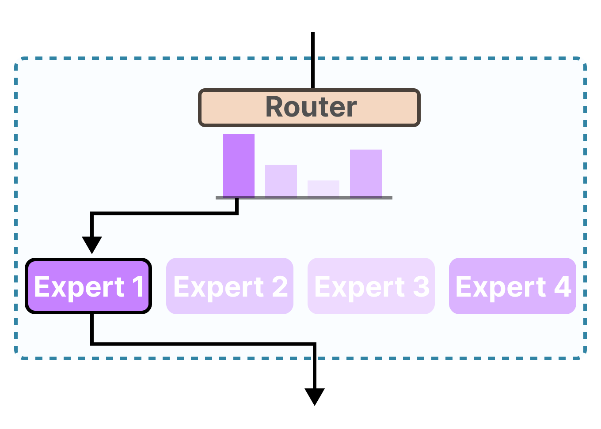

Лекция 1. Вводная
16
Две ветви блока
Декодер тот же. Дешевле становится либо сеть токена, либо часть слоёв, которые смешивают фразу.
Смесь экспертов
Сеть токена

Maarten Grootendorst, A Visual Guide to Mixture of Experts, 2024
Маршрут смотрит на токен и включает часть сетей. На рисунке выбран один, остальные молчат. Qwen3-235B считает 8 из 128: 235 млрд весов всего, 22 млрд на токен. Qwen3-Next считает 10 из 512 и один общий: 80 млрд всего, около 3 млрд на токен. Внимание по-прежнему идёт по всему контексту.
Гибрид
Смешение фразы
Слой состояния идёт слева направо: цена растёт как длина. Слой внимания снова видит всю фразу, и его цена растёт как квадрат длины. У Qwen3-Next 48 слоёв: три слоя состояния, затем слой внимания, и так двенадцать раз.
Обе ветви стоят в декодере и выбирают продолжение.
Исполнение вызова остаётся у рантайма.